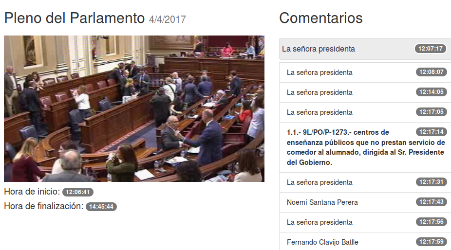

Desarrollo web 101
- HTML Estructura y Contenidos
- CSS Presentación
- Javascript Interacción
Programar javascript
sin librerías ni frameworks
Javascript con jQuery
- Simple
- Potente
- Ligero
- Está muy bien ... para cosas sencillas
Ejemplo
Como debe funcionar
- A la izquierda hay un listado de comentarios
- A medida que el vídeo avance, se debe resaltar el comentario pertinente
- Si pulsamos en el comentario, reposiciona el vídeo
Hasta aquí, bien
- Es factible hacerlo con jQuery
- De hecho, estaba así
- Pero llegan nuevas especificaciones
- Contador de tiempo real (Hora de inicio + timestamp)
- Controles play/pause adicionales
- Al hacer pause, queremos cambiar la url
jQuery empieza a quedarse pequeño
- Código confuso, frágil y difícil de modificar
- Todos las funciones tienen que saber de todo
- Por ejemplo, el botón de pause debe:
- Poner el vídeo en pausa
- Cambiar la URL
- Cambiar su propia imagen (de a )
- Parar el contador de tiempo real

Entornos reactivos
Para resolver estos problemas se desarrollan frameworks reactivos, que se basan en:
- El patron MVVM (Modelo Vista VistaModelo)
- data-binding y two way data-binding
El patron MVVM (Modelo Vista VistaModelo)
Es una versión del patron MVC. En este caso tenemos un modelo y una vista (o vistas). Pero la interacción entre ellos es automática, no se implementa con un controlador sino que se declara.
Data-bindibg
Al cambiar un dato en el modelo, este cambio se refleja o propaga de inmediato a la vista o vistas que dependan de él
Hola, mundo en Vue.js
Obsérvese que...
- Al iniciar Vue especificamos el elemento en el que puede
actuar, en este caso,
#app. Vue no interactuará ni afectará nada que no esté dentro de ese elemento - Usamos los delimitador
{{,}}para realizar un enlace o binding entre la página y nuestro modelo. - La página es reactiva
Vue tags: v-html
Podemos vincular con el contenido, respetando las marcas html
con la directiva v-html
Obsérvese que...
- Podemos almacenar el resultado de la llamada a Vue
en una variable (
vmen este caso) - Todas las directivas de vue empieza con
v-
Vincular un atributo html
Podemos vincular un dato de nuestro modelo
con un atributo; para ello usamos la directiva
v-bind
Obsérvese que...
- Lo más habitual es para cambiar la clase, aunque se puede modificar cualquier atributo
- Se puede abreviar de la siguiente manera:
v-bind:href ≌ :href
Two-way data binding
- Podemos realizar una vinculación de doble sentido
- Los cambios en el modelo se reflejaran en la vista, y los cambios en la vista se reproducirán en el modelo
- para ello usamos la directiva
v-model
Las directivas v-if y v-show
- Las dos permite controlar si un elemento aparece o no en la página
- La diferencia es que con
v-ifel elemento realmente estará o no en el arbol DOM, dependiendo del predicado, pero conv-showel elementos siempre estará, y será visible o no en función del predicado
Obsérvese que...
- Dentro de la condición podemos incluir expresiones en javascript (solo una línea)
- Si queremos que la directiva afecte a varias
etiquetas, podemos agruparlas
<template v-if="...">y</template>, estas desaparecen en el resultado final - Existe la directiva
v-else
La directiva v-for
- Podemos usar la directiva
v-forpara recorrer una lista de datos - La sintaxis usa la forma
v-for="item in items"
Observaciones
- Podemos obtener el índice con la sintaxis
(item, index) in items - También se puede iterar por las propiedades de un objeto
- Ojo con los métodos que no modifican un array, sino que devuelven uno nuevo
- Cuidado: Cambios por el índice no son detectados por
Vue, usar siempre
shift,unshift,pop, etc...
Métodos con v-on
- Podemos vincular acciones con métodos usando
la directiva
v-on:evento - Tenemos que definir nuestros métodos en la entrada methods de Vue.
Observaciones
- El contenido de v-on es javascript, pero lo normal es que sea una llamada a un método
- Existen modificadores del evento, en la forma
v-on.event.modifier, por ejemplov-on:keyup.entersolo se activa si la tecla pulsada es enter - Podemos abreviar
v.bind:evento=...como@evento=...
Filtros
- Vue.js permite definir filtros para presentación y formateo de resultados
- Se usan igual que los filtros de Django, después del caracter pipe "|"
- Podemos encadenar varios filtros
- Pueden tener argumentos adicionales (Y más de uno, no como Django)
- Se declaran en la entrada
filters
Componentes
- Podemos hacer componentes, que son como instancias pequeñas de vue con sus propias plantillas, métodos, modelos, etc...
- Muy interesantes y muy potentes
- Los componentes pueden usar otros componentes, lo que permite estructurar la aplicación a modo de bloques
Cosas que no podremos ver hoy
Pero resultan interesantes
Sobre todo si tienes javascript en el servidor
- Componentes en un solo vichero .vue
- Includes dinámicos de código javascript
- Vuex para gestionar el estado de la aplicación
- Plugins
- Testing
- One-page apps
- A lot of stuff...
Yo vine aquí a hablar de mi libro (1/2)
Yo vine aquí a hablar de mi libro (2/2)
Mejoras obtenidas
- De jquery a Vue.js, con la misma funcionalidad inicial, produjo un código ≊ 30% más pequeño
- Con la nueva funcionalidad, ≊ 90% código que en la version anterior con jQuery (Awesome!)
- Mucho más fácil de comprender, reparar y/o extender
- Puedes seguir usando jQuery, no son incompatibles
Truco 1: Usar en Django
- Las plantillas de Django usan el mismo sistema que Vue; los delimitadores {{ y }}
- Para usar Vue.js desde Django con comodidad, hay un
parámetro en la
configuración,
delimitersque permite usar como delimitadores los que tú especifiques, yo cambio {{ }} por [[ ]]
delimiters: ['[[', ']]'],
Truco 2: Haz que desaparezcan los bigotes {{ }}
- En la carga de la página, se pueden ver, las marcas de plantilla hasta que Vue haya terminado de cargarse e inicializarse. Feo.
- Para resolverlo, Vue aplica inicialmente la
directiva
v-cloaka todo lo que tenga bajo su control, y cuando ya esté completamente operativo la quita. - En resumen, esto en tu hoja de estilos debería resolver el problema:
[v-cloak] { display:none; }
Frameworks similares a Vue.js
- Angular.js
- React
- Knockout.js
- Ember, Polymer, Backbone... You named it
¿Por qué Vue.js? (1/2)
Warning: Absolutely Subjective Opinions Ahead!
- Pequeño tamaño
- Los modelos son simples objetos javascript, no hay que heredar, registrar, llamarlos de deteminada manera, etc...
- Se puede empezar a usar simplemente añadiendo la librería vue.js (Luego si quieres te puedes liar la manta a la cabeza, pero no es obligatorio instalar 20 dependencias para el hola mundo)
¿Por qué Vue.js? (2/2)
Warning: Absolutely Subjective Opinions Ahead!
- No es de facebook
- Para componentes usa los tres lenguajes que ya conocemos: Html, css y javascript para contenidos, presentacion y lógica
- Si quieres, puedes entender lo que pasa internamente, no hay "magia"
Por eso esta presentación se llama...
Vue.js - El Framework javascript para muggles
Juan Ignacio Rodriguez de León
Licenciado en Frameworks Mágicos por la escuela de Magia de Hogwarts
euribates at gmail.com · @jileon en twitter
Esta presentación se puede descargar de
https://githu.com/euribates/vuelab/